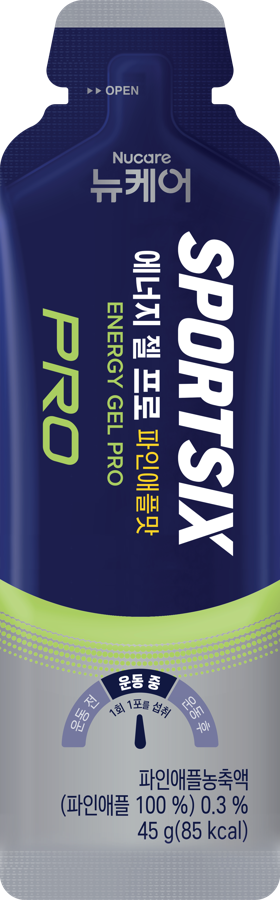

PRO

运动中 · 赛中补给
能量胶PRO
重新定义“零负担”能量胶
长跑不胀肚，夜跑不失眠
缓释
超低渗
HBCD
菠萝味
0咖啡因
-26%甜度，相比含咖啡因版
85kcal每支能量
21g优质碳水
KEY POINTS
极速排空 + 护胃抗损
01“秒排空”，胃里不晃荡采用 HBCD（高支链环糊精），分子超大、渗透压极低，像喝清水一样迅速穿过胃部进入肠道，跑步跳跃时胃里没有“水晃荡”和胀气感。
02边跑边修护肠道与关节额外添加了谷氨酰胺（防止高温剧烈运动下的肠道黏膜痉挛反胃）与小分子胶原蛋白肽 + BCAA（缓冲下坡冲坠对膝盖软骨与韧带的微损伤）。
03纯 0 咖啡因，不抢心率不含咖啡因，晚上训练吃完也不影响睡眠。
不仅是能量胶
更是「肠胃救星」
HBCD（高支链环状糊精）被称为“高分子循环型糊精”的碳水化合物成分，是运动员良好的能量来源。
快排空胃里不积食，长距离无“坠重感”
慢吸收像打点滴一样匀速供能，拒绝血糖骤升骤降
强实证有效降低疲劳值，加速赛后恢复
01摄入 HBCD
02通过低渗透压快速从上部排出快速清空胃部，缓解饱胀感
03通过 α-(1,6) 结合缓慢消化长时间提供能量
04运动所需快速且持久地提供健康能量
此为原料说明，非产品本身。胃排空提速来源于《高支链环状糊精（HBCD）及其对运动员运动表现的增效作用简要综述》。
RELEASE
吸收集中，还是持续释放
SPORTSIX PRO 能量胶
持续释放
供能更稳定
降低疲劳感
曲线为示意。来源于《高支链环状糊精（HBCD）及其对运动员运动表现的增效作用简要综述》。
TASTE
菠萝水感胶
清爽到忘记它的存在
0 咖啡因 · 全时段友好
专为咖啡因敏感体质、夜跑党、青少年运动员打造。提神靠自己，补能交给我。
降甜 26% · 顺滑不糊喉
菠萝酸甜口，水感凝胶质地，高强度颠簸中食用也不呛喉，无糖渣残留。
85 KCAL
85 大卡的精致补给
拒绝无效填充，只留有效能量
21g 优质碳水持久续航
8g 轻糖减少身体负担
BCAA / 精氨酸 / 肌酸补糖、抗疲劳、肌肉保护
电解质钠预防长距离抽筋
6 INGREDIENTS
SPORTSIX 精心严选
为运动而生的 6 种协同原料
SCENES
场景推荐
越野跑 50km+ 后半程 / 夜赛越野跑后程由于脱水、高温，很多跑者肠胃罢工、“闻到甜味就恶心甚至呕吐”。此时能量胶PRO 更容易顺畅吞入。
Hyrox 晚间大强度团课下班后 19:00-21:00 上高强度大课，既需要快速供能，又怕摄入咖啡因导致整夜失眠，可以选能量胶PRO。
长距离下坡与多日耐力挑战连续高落差下坡肌肉离心收缩剧烈时，胶原蛋白肽与氨基酸矩阵能直接在行进间延缓肌肉与结缔组织损伤。
食用指南
赛前 30min打底储备1 条
开赛缓释续航1 条
40~60minHBCD 稳血糖1 条
60~90min回血恢复1 条（可选）
完赛后
3 条食用口诀：提前打底 1 条，赛中 45 分钟 1 条，PRO 款全天随便补。
Q&A
新手吃胶 Q&A
HBCD 本身比葡萄糖 / 麦芽糊精温和，建议首次长距离前用一次 LSD（长距离慢跑）试胶。
营养成分表每份 45g
能量85 千卡
碳水化合物21 g
糖类8 g
钠25 mg
脂肪0 g
蛋白质0 g
规格：总重 270g（45g × 6 条）。食品类型：混合饮料。
QUICK PICK
产品速选对比
一句话定位高能续航 + 天然提神极速排空 + 护胃抗损
规格与热量45g / 120 kcal45g / 85 kcal
能量密度2.67 kcal/g1.89 kcal/g
碳水方案麦芽糊精 + 帕拉金糖HBCD + 麦芽糊精 + 果糖
功能复方瓜拉纳咖啡因 + VB3 + 氨基酸谷氨酰胺 + 精氨酸 + 胶原蛋白肽 + BCAA
口感顺滑果汁感，清爽不齁甜、不糊喉咙近似水感果冻，易下咽
咖啡因约 45mg / 包0 咖啡因，晚课 / 敏感人群友好
能量胶45mg 咖啡因 · 青葡萄味 / 桃子味